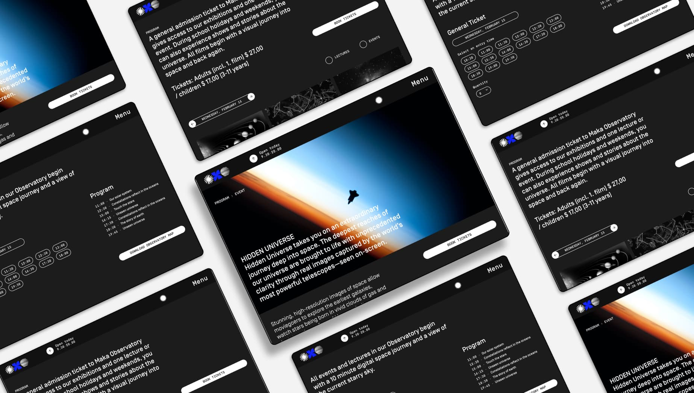

Maka Observatory Website

Project centered around the conceptualization and visual identity of an observatory on the island of Niue. As the digital design lead, I crafted a 15-page functioning prototype website. The platform, available in both light and dark modes, allows users to book tickets, explore the observatory, delve into astronomy, and shop for related products.
Project supervised by prof. Cristiano Bottino for the Identity Design Laboratory @SPD.
